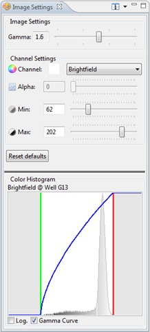

The Image Settings view can be used to adjust how an image is shown in Phaedra (e.g. in the Well Image view, on a heatmap, etc.).
The Color Histogram will give a graph with the colors of the image and the borders of the selection that you use to present on the image. The gamma curve overlay on the Histogram can easily be switched on or off. Press the Log checkbox to see more detail in the low-frequency areas of the Histogram.
The different options are:
- Gamma: Change the total image brightness. The default is value 1.6.
- Channel: Select the channel set you wish to adjust. The settings listed below apply only to the selected channel.
- Alpha: The transparency for an overlay channel, where 0 is transparent and 255 is opaque.
- Min: The minimum intensity of the contrast range. This is represented as the green line in the Color Histogram.
- Max: The maximum intensity of the contrast range. This is represented as the red line in the Color Histogram.
- Reset Default: Reset all your adjusted values back to the default values.
To open the Image Settings:
- Right-click on an image >
Image Settings
- Go to Window >
Show View >
Other >
Image >
Image Settings
